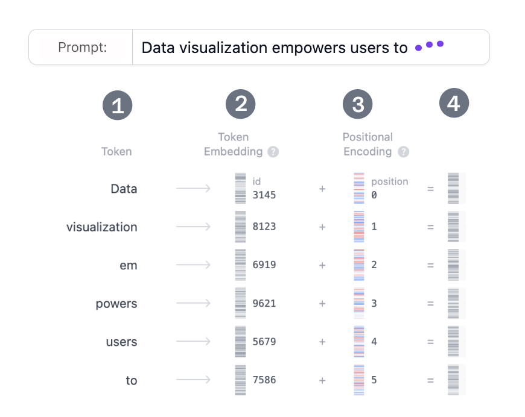
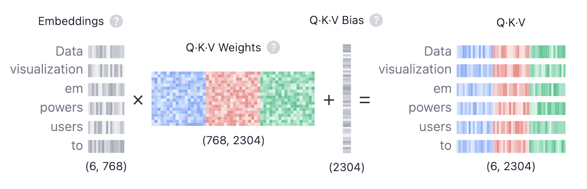
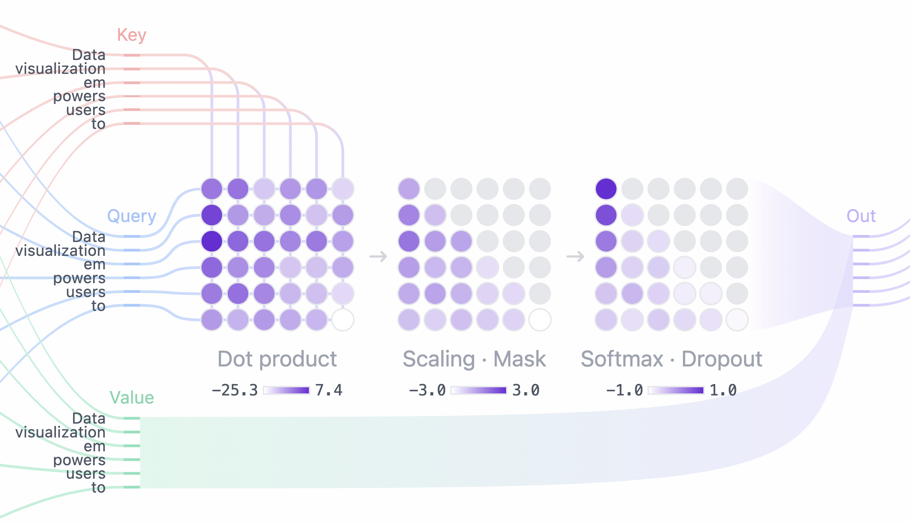
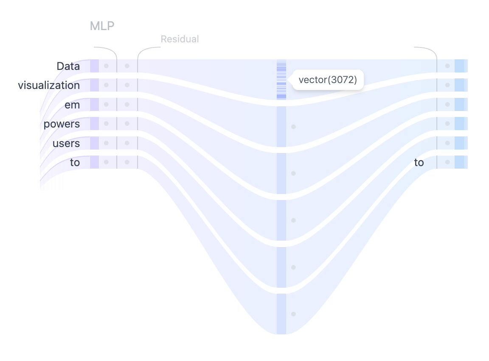
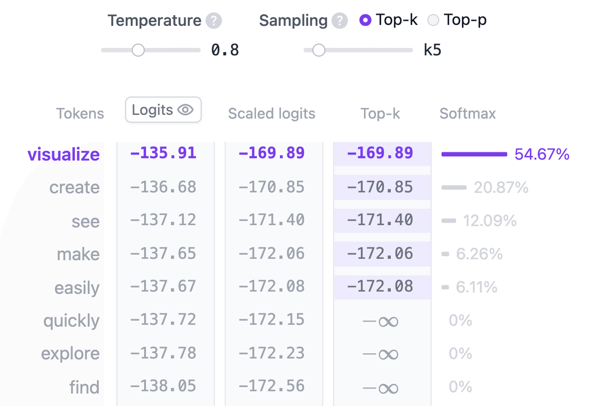

What is a Transformer?
Transformer is a neural network architecture that has fundamentally changed the approach to Artificial Intelligence. Transformer was first introduced in the seminal paper "Attention is All You Need" in 2017 and has since become the go-to architecture for deep learning models, powering text-generative models like OpenAI's GPT, Meta's Llama, and Google's Gemini. Beyond text, Transformer is also applied in audio generation, image recognition, protein structure prediction, and even game playing, demonstrating its versatility across numerous domains.
Fundamentally, text-generative Transformer models operate on the principle of next-token prediction: given a text prompt from the user, what is the most probable next token (a word or part of a word) that will follow this input? The core innovation and power of Transformers lie in their use of self-attention mechanism, which allows them to process entire sequences and capture long-range dependencies more effectively than previous architectures.
GPT-2 family of models are prominent examples of text-generative Transformers. Transformer Playground is powered by the GPT-2 (small) model which has 124 million parameters. While it is not the latest or most powerful Transformer model, it shares many of the same architectural components and principles found in the current state-of-the-art models making it an ideal starting point for understanding the basics.
Transformer Architecture
Every text-generative Transformer consists of these three key components:
- Embedding: Text input is divided into smaller units called tokens, which can be words or subwords. These tokens are converted into numerical vectors called embeddings, which capture the semantic meaning of words.
- Transformer Block is the fundamental building block of
the model that processes and transforms the input data. Each block includes:
- Attention Mechanism, the core component of the Transformer block. It allows tokens to communicate with other tokens, capturing contextual information and relationships between words.
- MLP (Multilayer Perceptron) Layer, a feed-forward network that operates on each token independently. While the goal of the attention layer is to route information between tokens, the goal of the MLP is to refine each token's representation.
- Output Probabilities: The final linear and softmax layers transform the processed embeddings into probabilities, enabling the model to make predictions about the next token in a sequence.
From the 2017 Paper to GPT-2
The Transformer was introduced in the 2017 paper “Attention Is All You Need” by eight researchers, most of them at Google. The original model was built for translation (for example, English to German) and had two halves: an encoder that reads the whole input sentence, and a decoder that writes the translation one token at a time, looking back at the encoder's output through cross-attention.
GPT-2 (2019) keeps only the decoder. There is no second sentence to read, so there is no cross-attention: each block has masked self-attention and an MLP, and the model simply predicts the next token of the text it is given. The core ideas you see in this playground come straight from the paper: scaled dot-product attention, multiple heads, the output projection WO, residual connections and layer normalization.
| 2017 Transformer (base) | GPT-2 (small) | |
|---|---|---|
| Job | Translation | Continue text (next-token prediction) |
| Parts | Encoder + decoder | Decoder only |
| Layers | N = 6 encoder + 6 decoder | 12 blocks |
| Vector size (dmodel) | 512 | 768 |
| Attention heads | 8 (64 numbers each) | 12 (64 numbers each) |
| MLP hidden size | 2,048 | 3,072 |
| Word positions | Fixed sine and cosine waves | Learned position embeddings |
| Layer normalization | After each part | Before each part (and once at the end) |
Embedding
Let's say you want to generate text using a Transformer model. You add the prompt like this
one: “Data visualization empowers users to”. This input needs to be converted
into a format that the model can understand and process. That is where embedding comes in: it
transforms the text into a numerical representation that the model can work with. To convert a
prompt into embedding, we need to 1) tokenize the input, 2) obtain token embeddings, 3) add
positional information, and finally 4) add up token and position encodings to get the final
embedding. Let’s see how each of these steps is done.

Step 1: Tokenization
Tokenization is the process of breaking down the input text into smaller, more manageable
pieces called tokens. These tokens can be a word or a subword. The words "Data" and "visualization" correspond to unique tokens, while the word "empowers" is split into two tokens. The full vocabulary of tokens is decided before training the model:
GPT-2's vocabulary has 50,257 unique tokens. Now that we split our input text into
tokens with distinct IDs, we can obtain their vector representation from embeddings.
Step 2. Token Embedding
GPT-2 (small) represents each token in the vocabulary as a 768-dimensional vector; the
dimension of the vector depends on the model. These embedding vectors are stored in a matrix
of shape (50,257, 768), containing approximately 39 million parameters! This
extensive matrix allows the model to assign semantic meaning to each token, in the sense
that tokens with similar usage or meaning in language are placed close together in this
high-dimensional space, while dissimilar tokens are farther apart.
Step 3. Positional Encoding
The Embedding layer also encodes information about each token's position in the input prompt. Different models use various methods for positional encoding. GPT-2 trains its own positional encoding matrix from scratch, integrating it directly into the training process.
Step 4. Final Embedding
Finally, we sum the token and positional encodings to get the final embedding representation. This combined representation captures both the semantic meaning of the tokens and their position in the input sequence.
Transformer Block
The core of the Transformer's processing lies in the Transformer block, which comprises
multi-head self-attention and a Multi-Layer Perceptron layer. Most models consist of multiple
such blocks that are stacked sequentially one after the other. The token representations
evolve through layers, from the first block to the last one, allowing the model to build up an
intricate understanding of each token. This layered approach leads to higher-order
representations of the input. The GPT-2 (small) model we are examining consists of 12 such blocks.
Multi-Head Self-Attention
The self-attention mechanism enables the model to capture relationships among tokens in a sequence, so that each token’s representation is influenced by the others. Multiple attention heads allow the model to consider these relationships from different perspectives; for example, one head may capture short-range syntactic links while another tracks broader semantic context. In the following section, we will walk through how multi-head self-attention is computed step by step.
Step 1: Query, Key, and Value Matrices

Each token's embedding vector is transformed into three vectors: Query (Q), Key (K), and Value (V). These vectors are derived by multiplying the input embedding matrix with learned weight matrices for Q, K, and V. Here's a web search analogy to help us build some intuition behind these matrices:
- Query (Q) is the search text you type in the search engine bar. This is the token you want to "find more information about".
- Key (K) is the title of each web page in the search result window. It represents the possible tokens the query can attend to.
- Value (V) is the actual content of web pages shown. Once we matched the appropriate search term (Query) with the relevant results (Key), we want to get the content (Value) of the most relevant pages.
By using these QKV values, the model can calculate attention scores, which determine how much focus each token should receive when generating predictions.
Step 2: Multi-Head Splitting
Query, key, and Value vectors are split into multiple heads—in GPT-2 (small)'s case, into 12 heads. Each head processes a segment of the embeddings independently, capturing
different syntactic and semantic relationships. This design facilitates parallel learning of
diverse linguistic features, enhancing the model's representational power.
Step 3: Masked Self-Attention
In each head, we perform masked self-attention calculations. This mechanism allows the model to generate sequences by focusing on relevant parts of the input while preventing access to future tokens.

- Dot Product: The dot product of Query and Key matrices determines the attention score, producing a square matrix that reflects the relationship between all input tokens.
- Scaling · Mask: The attention scores are scaled and a mask is applied to the upper triangle of the attention matrix to prevent the model from accessing future tokens, setting these values to negative infinity. The model needs to learn how to predict the next token without “peeking” into the future.
- Softmax · Dropout: After masking and scaling, the attention scores are converted into probabilities by the softmax operation, then optionally regularized with dropout. Each row of the matrix sums to one and indicates the relevance of every other token to the left of it.
Step 4: Output and Concatenation
The model uses the masked self-attention scores and multiplies them with the Value matrix to get the final output of the self-attention mechanism. GPT-2 has 12 self-attention heads, each capturing
different relationships between tokens. The outputs of these heads are concatenated (12 × 64
= 768 numbers per token) and passed through a linear projection.
Step 5: Output Projection (WO)
The concatenated vector is multiplied by one more learned matrix, the output projection WO (768 × 768, plus a bias; called c_proj in the GPT-2 code). Concatenation only places the heads side by side; WO mixes what the different heads found into one vector for each token. This is the WO in the 2017 paper's formula MultiHead(Q, K, V) = Concat(head1, …, headh) WO. Click the × WO badge in the
visualization to see it. The result then goes through dropout and is added back to the input
by the residual connection.
MLP: Multilayer Perceptron (the Feed-Forward Network)

After the multiple heads of self-attention capture the diverse relationships between the input tokens, the projected attention outputs are passed through the multilayer perceptron (MLP), also called the feed-forward network, to enhance the model's representational capacity. The MLP block consists of two linear transformations with a GELU activation function in between.
The first linear transformation expands the dimensionality of the input four-fold from 768 to 3072. This expansion step allows the model to project the token representations
into a higher-dimensional space, where it can capture richer and more complex patterns that
may not be visible in the original dimension.
The second linear transformation then reduces the dimensionality back to the original size of 768.This compression step brings the representations back to a manageable size while retaining
the useful nonlinear transformations introduced in the expansion step.
Unlike the self-attention mechanism, which integrates information across tokens, the MLP processes tokens independently and simply maps each token representation from one space to another, enriching the overall model capacity.
Output Probabilities
After the input has been processed through all Transformer blocks, the output is passed
through the final linear layer to prepare it for token prediction. This layer projects the
final representations into a 50,257 dimensional space, where every token in the vocabulary has a corresponding value called logit. Any token can be the next word, so this process allows us to simply rank
these tokens by their likelihood of being that next word. We then apply the softmax function
to convert the logits into a probability distribution that sums to one. This will allow us to
sample the next token based on its likelihood.

The final step is to generate the next token by sampling from this distribution The temperature hyperparameter plays a critical role in this process. Mathematically speaking, it is a very simple
operation: model output logits are simply divided by the temperature:
temperature = 1: Dividing logits by one has no effect on the softmax outputs.temperature < 1: Lower temperature makes the model more confident and deterministic by sharpening the probability distribution, leading to more predictable outputs.temperature > 1: Higher temperature creates a softer probability distribution, allowing for more randomness in the generated text – what some refer to as model “creativity”.
In addition, the sampling process can be further refined using top-k and top-p parameters:
top-k sampling: Limits the candidate tokens to the top k tokens with the highest probabilities, filtering out less likely options.top-p sampling: Considers the smallest set of tokens whose cumulative probability exceeds a threshold p, ensuring that only the most likely tokens contribute while still allowing for diversity.
By tuning temperature, top-k, and top-p, you can
balance between deterministic and diverse outputs, tailoring the model's behavior to your
specific needs.
Auxiliary Architectural Features
There are several auxiliary architectural features that enhance the performance of Transformer models. While important for the model's overall performance, they are not as important for understanding the core concepts of the architecture. Layer Normalization, Dropout, and Residual Connections are crucial components in Transformer models, particularly during the training phase. Layer Normalization stabilizes training and helps the model converge faster. Dropout prevents overfitting by randomly deactivating neurons. Residual Connections allows gradients to flow directly through the network and helps to prevent the vanishing gradient problem.
Layer Normalization
Layer Normalization helps to stabilize the training process and improves convergence. It works by normalizing the inputs across the features, ensuring that the mean and variance of the activations are consistent. This normalization helps mitigate issues related to internal covariate shift, allowing the model to learn more effectively and reducing the sensitivity to the initial weights. Layer Normalization is applied twice in each Transformer block, once before the self-attention mechanism and once before the MLP layer.
Dropout
Dropout is a regularization technique used to prevent overfitting in neural networks by randomly setting a fraction of model weights to zero during training. This encourages the model to learn more robust features and reduces dependency on specific neurons, helping the network generalize better to new, unseen data. During model inference, dropout is deactivated. This essentially means that we are using an ensemble of the trained subnetworks, which leads to a better model performance.
Residual Connections
Residual connections were first introduced in the ResNet model in 2015. This architectural innovation revolutionized deep learning by enabling the training of very deep neural networks. Essentially, residual connections are shortcuts that bypass one or more layers, adding the input of a layer to its output. This helps mitigate the vanishing gradient problem, making it easier to train deep networks with multiple Transformer blocks stacked on top of each other. In GPT-2, residual connections are used twice within each Transformer block: once before the MLP and once after, ensuring that gradients flow more easily, and earlier layers receive sufficient updates during backpropagation.
Interactive Features
Transformer Playground is built to be interactive and allows you to explore the inner workings of the Transformer. Here are some of the interactive features you can play with:
- Input your own text sequence to see how the model processes it and predicts the next word. Explore attention weights, intermediate computations, and see how the final output probabilities are calculated.
- Use temperature slider to control the randomness of the model’s predictions. Explore how you can make the model output more deterministic or more creative by changing the temperature value.
- Select top-k and top-p sampling methods to adjust sampling behavior during inference. Experiment with different values and see how the probability distribution changes and influences the model's predictions.
- Interact with attention maps to see how the model focuses on different tokens in the input sequence. Hover over tokens to highlight their attention weights and explore how the model captures context and relationships between words.
Video Tutorials
Learn transformers step by step, explained simply, on the HERE AND NOW AI YouTube channel.
Watch the original video tutorial by the Transformer Explainer team on YouTube. (We link to videos instead of embedding them, so this page loads nothing from YouTube unless you click.)
How is Transformer Playground Implemented?
Transformer Playground features a live GPT-2 (small) model running directly in the browser. This model is derived from the PyTorch implementation of GPT by Andrej Karpathy's nanoGPT project and has been converted to ONNX Runtime for seamless in-browser execution. The interface is built using JavaScript, with Svelte as a front-end framework and D3.js for creating dynamic visualizations. Numerical values are updated live following the user input.
Credits
Based on Transformer Explainer by the Polo Club of Data Science, Georgia Tech (MIT licence). Transformer Explainer was created by Aeree Cho, Grace C. Kim, Alexander Karpekov, Alec Helbling, Jay Wang, Seongmin Lee, Benjamin Hoover, and Polo Chau at the Georgia Institute of Technology. Read their paper: Transformer Explainer (CHI 2026), DOI 10.1145/3772318.3791725.
The model is GPT-2 (small) by OpenAI (modified MIT licence), loaded through Andrej Karpathy's nanoGPT, and text is split into tokens with the Transformers.js GPT-2 tokenizer by Xenova. The dark theme started from a community contribution to the original project.
Transformer Playground is built and maintained by HERE AND NOW AI. It adds a new light and dark design, Story mode (a guided 9-step tour), an attention heatmap, the next-word race, shareable links, keyboard shortcuts, a phone layout, the attention output projection (WO) and a link to the 2017 paper, and it removes all analytics and tracking. The source code is open under the MIT licence: github.com/hereandnowai/transformer-playground.
About HERE AND NOW AI
HERE AND NOW AI teaches artificial intelligence, generative AI and agentic AI, explained simply for everyone. AI is Good.
- Website: hereandnowai.com
- Email: info@hereandnowai.com
- YouTube: @hereandnow_ai
- GitHub: github.com/hereandnowai